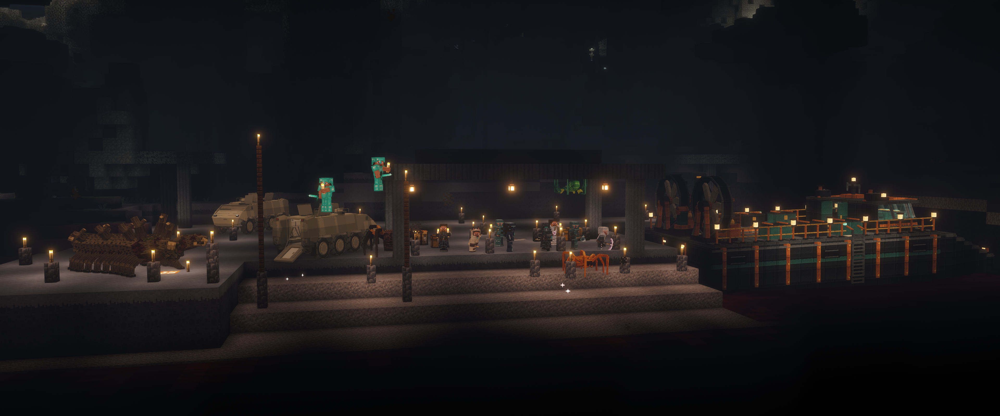
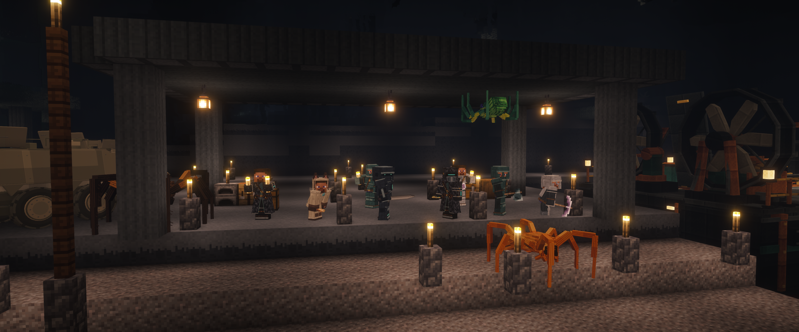

Междуморье — фото друзей
Настоящие кадры Minecraft 1.21.1 с DH и Complementary. Отдельный постановочный мир V6, игровой свет, без ночного зрения и монтажа. Оригиналы: 3840 × 1600.

«Скат», два «Эйтана», наша броня, Ложнокорень и пауки. Гости в алмазке попали под настоящий прилив, компания остаётся под навесом.
Близкий ракурс компании и потолочного паука.Разрешения и SHA256 оригиналов · Расстановка сцены